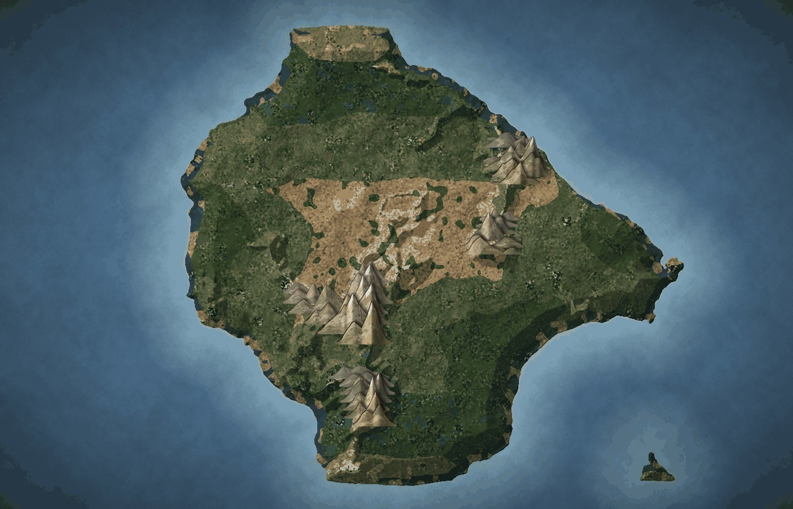
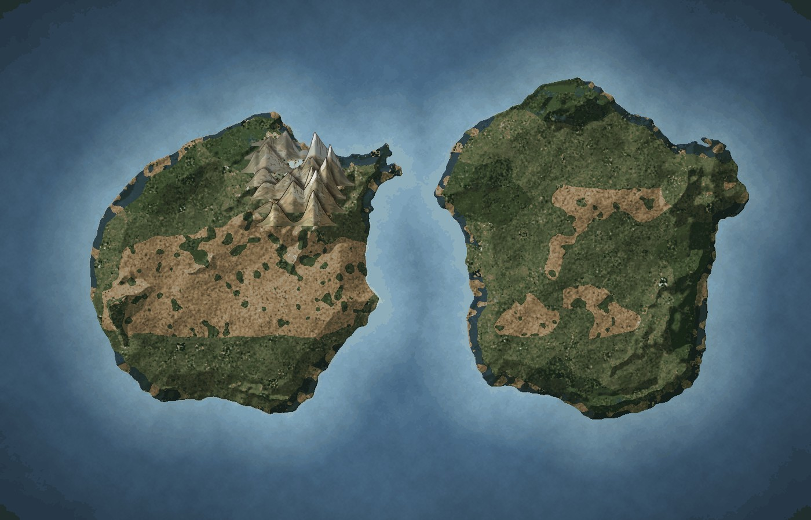
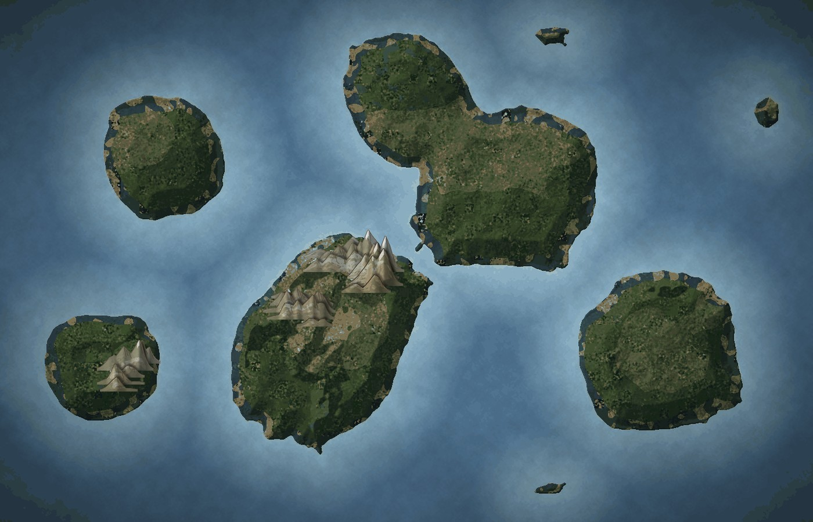
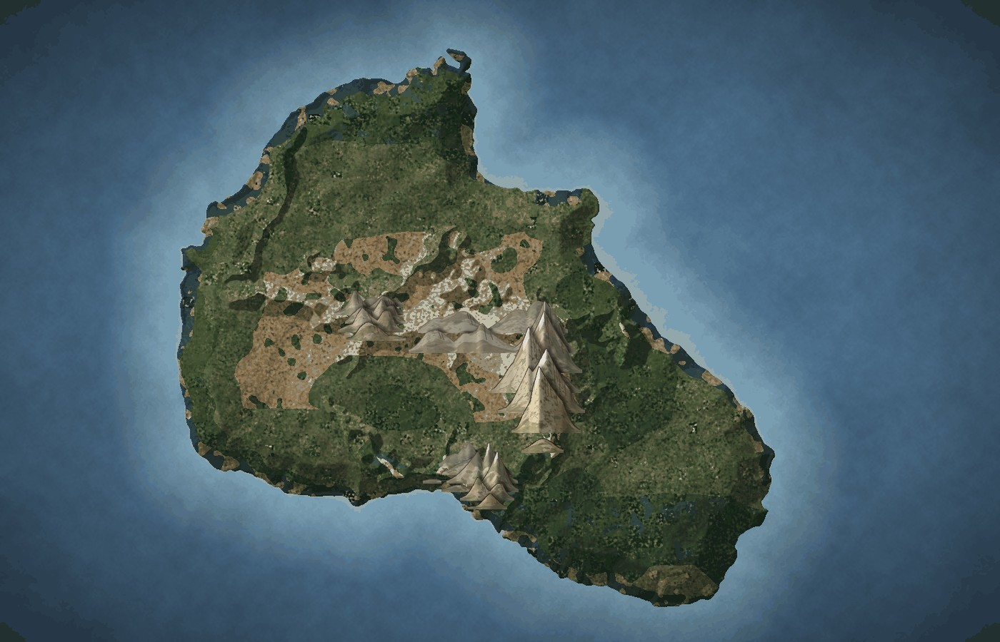
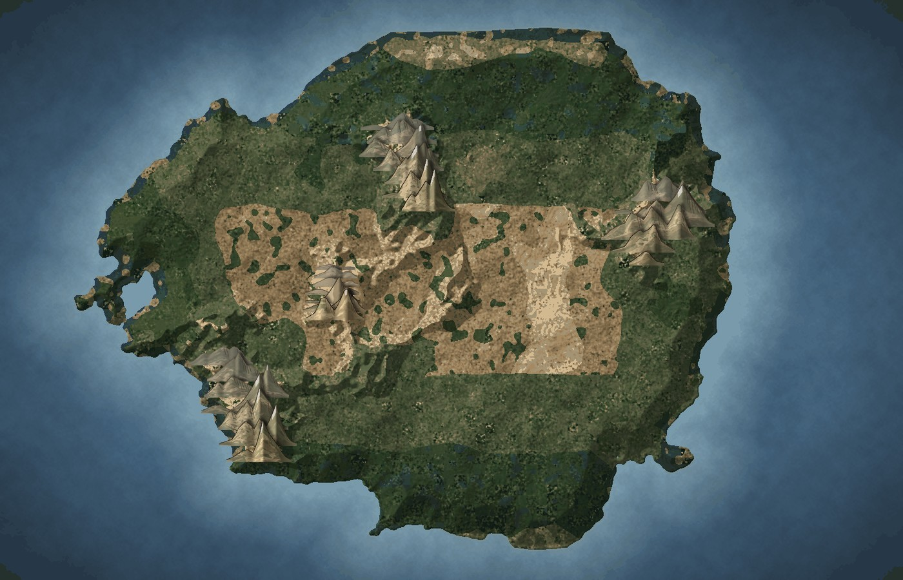
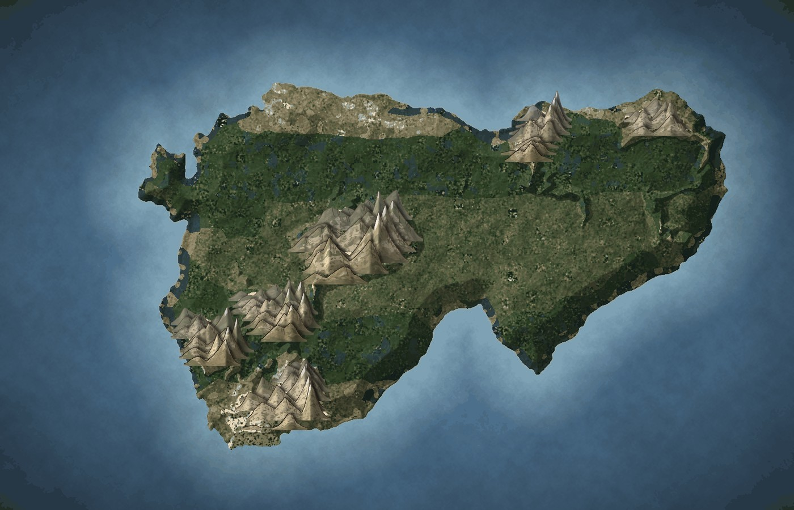
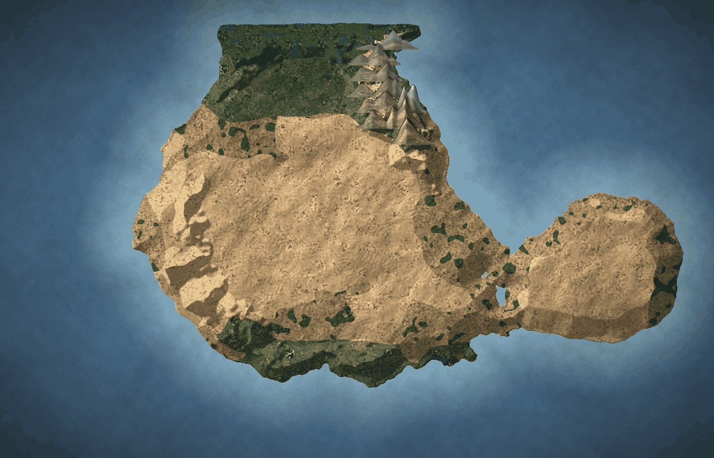
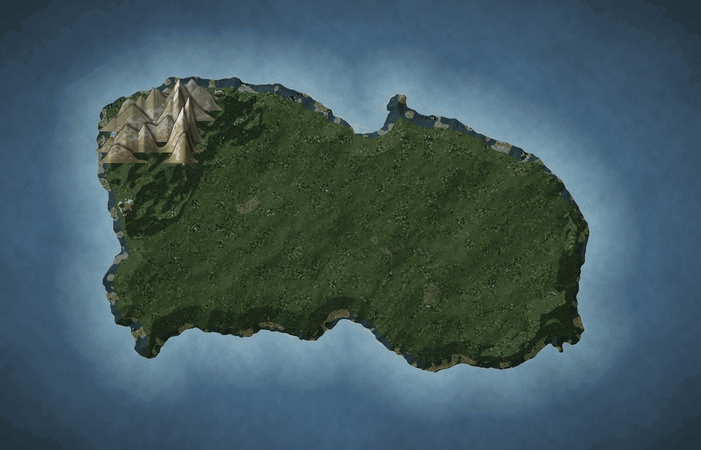
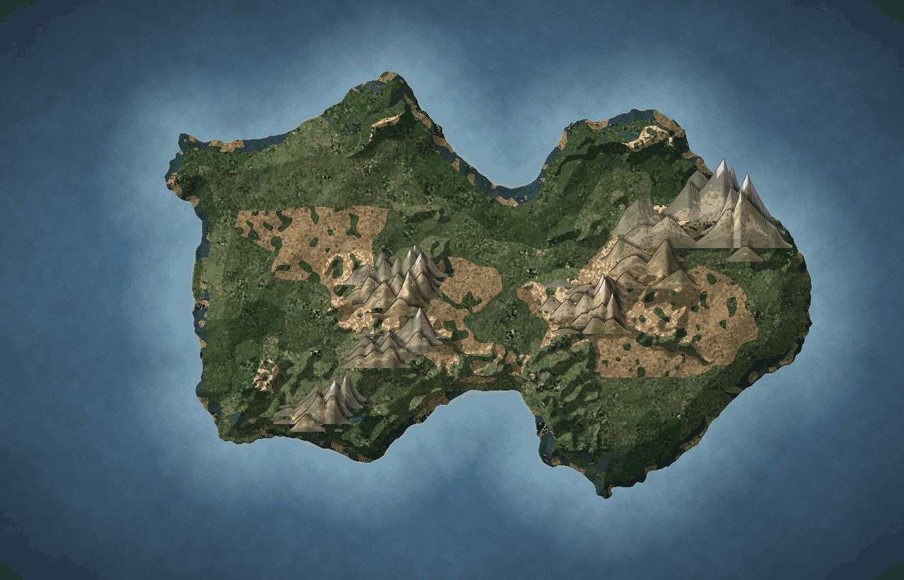
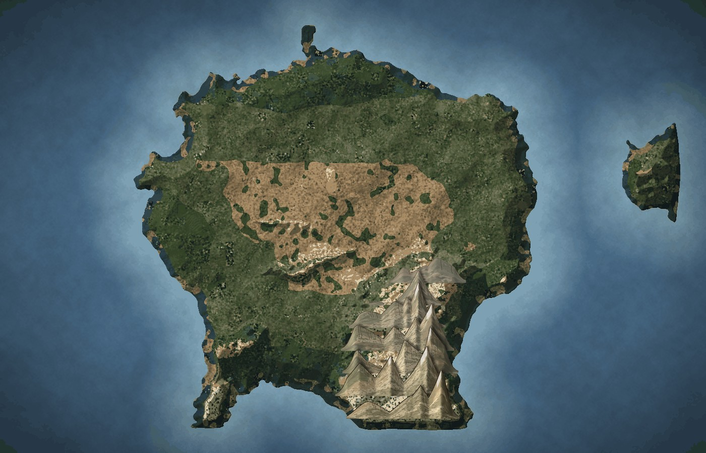

世界地図10枚とGemini添削の発注文
概要: ユーザー指示(2026-11-18)「段階12を基本に使う。世界地図を10個作り、この方式で絵を作る。その絵をGeminiに添削させ、ファンタジー地図として何が足りなくて何が余計かを整理する」の第1段階です(目的: 添削の元になる絵と発注文をそろえるため)。10枚の地図を作り、Geminiへの発注文を作りました。Geminiへ貼るのは、10枚の画像と、下の発注文です。
手順(一つずつ)
- 10枚の地図を、下から1枚ずつ長押しして保存する(または、各画像を開いて保存する)。
- Geminiに、10枚を添付し、下の発注文を貼って送る。
- Geminiの返答を、私に貼って渡す。私が、足りないものと余計なものを整理します(次の段階)。
Geminiへの発注文(そのまま貼れます)
添付した10枚の画像は、プログラムで自動生成した「ファンタジー世界の地図」です。1枚ずつ、ファンタジー地図(物語やゲームの舞台となる世界地図)として、添削してください。 【画像の説明】 ・10枚は、世界の形の違う地図です(順番に、1=一つの大陸、2=二つの大陸、3=群島、4=三日月の大陸、5=巨大な一つの大陸、6=寒冷な世界、7=乾燥した世界、8=湿潤な熱帯の世界、9=山脈の多い世界、10=内海のある大陸)。 ・地図に描かれているのは、陸と海の形、地面の色(森・草地・砂漠・岩・雪などの区分)、陰影、海の濃淡、山岳地帯の山の絵だけです。 ・山の絵は、山のまとまった地域だけに、重ねた山並みとして描き、それ以外の陸は絵を描かず、色と陰影だけにしています。 ・川、湖、道、国境、都市・町、地名、文字、方位記号、縮尺、凡例、海の装飾は、まだ何も描いていません(意図的に省略)。 【してほしいこと】 1. 10枚それぞれについて、次の3つを、箇条書きで3〜5個ずつ答える。 ・足りないもの(ファンタジー地図として、あったほうがよいもの) ・余計なもの、不自然なもの(なくてよいもの、変なもの) ・良い点 2. 10枚に共通する「足りないもの」と「余計なもの」を、それぞれ重要な順に、理由をつけて整理する。 3. 「足りないもの」を、次の4つに分類して、各分類の中で重要な順に並べる。 ・地形そのもの(海岸線、川、湖、島、半島、地形の変化など) ・絵の描き方(山、森、海、色、質感、陰影など) ・地図の情報(都市、道、国境、地名、方位記号、縮尺、凡例など) ・世界観(ファンタジーらしさを出す要素) 4. 10枚を、ファンタジー地図として「一番良い」から順に並べ、理由を一言ずつ添える。 5. 最後に、「次に直すと一番効果が大きい5つ」を、重要な順に答える。 【守ってほしいこと】 ・各地図について「自動生成であること」を前提に、実際に見える内容だけを書く。見えないものを、あるように書かない。 ・ほめるだけの添削にしない。足りないものと余計なものを、遠慮なく具体的に書く。 ・あなたが画像から読み取れないことは、「読み取れない」と書く。 ・日本語で、見出しと箇条書きを使い、全体を読みやすくまとめる。
世界地図10枚
1枚目: 一つの大陸
山岳地帯 4か所


2枚目: 二つの大陸
山岳地帯 1か所


3枚目: 群島
山岳地帯 3か所


4枚目: 三日月の大陸
山岳地帯 3か所


5枚目: 巨大な一つの大陸
山岳地帯 4か所


6枚目: 寒冷な世界
山岳地帯 6か所


7枚目: 乾燥した世界
山岳地帯 1か所


8枚目: 湿潤な熱帯の世界
山岳地帯 1か所


9枚目: 山脈の多い世界
山岳地帯 5か所


10枚目: 内海のある大陸
山岳地帯 1か所


限界・未確認
- 10枚の世界は、これまでの地図(Azgaar由来)ではなく、私が今回書いた簡単な生成プログラムで作りました(大きな陸の塊と、緯度による気温、湿り気で地面の区分を決める)。海岸線が単純で、地面の区分の境が人工的に見える所があります(特に砂漠の帯)。
- 山の絵は、段階12の方式のままです。山岳地帯の数は10枚で1〜6か所、山岳地帯が陸に占める割合は約3〜10%です。
- 川・湖・道・国境・都市・地名・文字・方位記号は、ありません(意図的に省略)。Geminiが「足りない」と指摘するのは、この省略が中心になると予想します。
- Geminiが画像から読み取れる内容は、確かめていません。
- 各地図のサイズは1400×900画素です。
生成コード: mk_worlds_gen.py(世界のデータ)/ 山の絵は stage12_gen.py